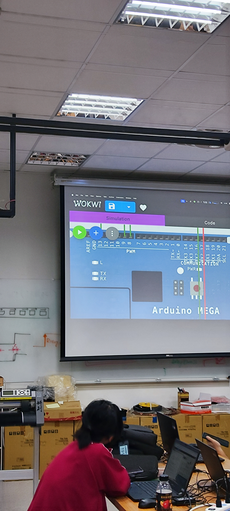

關於我們
社長-陳芊綾
點我展開
哈囉各位 在下是陳芊綾
定位是溫柔幽默ㄉ社長✌️
也是社博獨自辛苦推銷的人😔
可以叫我七零或大社長（聽起來很帥）
身為ENFP的快樂小狗
我會讓社團氣氛變得非常活潑ჱ̒ ｰ̀֊ｰ́ )
然後我非常喜歡看漫畫📖
當有人問我段考前認真讀了什麼
那一定是漫畫🫵
我也很喜歡聽音樂 可以跟我交流歌單( ｰ̀֊ｰ́ )و
（中、日、英文都聽！）
擅長軟體 硬體能力比較弱😫
但對社團有什麼問題都可以來問我～
也可以偷偷告訴我你們想學什麼技能喔‼️
副社長-蔡旻辰
點我展開
大家好我是副社長～～
我本人是一個超級社恐 通常要找我主動講話我才會開口
不過其實我很喜歡交朋友 可以來加我ig(誤 熟了之後會常常看到我做一些社牛行為
不過我還是社恐啦（╯－＿－）╯╧╧
第一個一定要講到我的綽號 多到一個不得了 不過我只接受別人叫我礦工（想知道其他的可以付費解鎖）其他我一概不接受(•́へ•́ ╬)
我現在會Python跟C++ 但是專攻在網頁開發 朝著前端開發工程師前進 不過不是很厲害就是了（Javascript好難）
如果你也對網頁開發有興趣的話很歡迎來找我聊聊(σ°∀°)σ..:*☆
我還會一點點3D建模 不過不是花很多時間在鑽研 也會一些雷射雕刻 常常雕一些小小的鑰匙圈 看雕刻的過程真的很舒壓 (/^▽^)/
然後我跟我們大教學一樣是ikun（社博的坤坤鑰匙圈就是我做的噢）超級小黑子 甚至還買了一個坤坤耳機保護套
不過我不像教學一樣會鐵山靠 大家可以去跟他請教(*¯︶¯*)
教學-黃慶宸
點我展開
小弟是第十屆教學
對python的研究比較深 對於我這種懶人來說python真的是超級棒的程式語言 但最近越來越懶希望能認真起來
平時也喜歡看實體小說 說不定有機會在學校無聲廣播上看到我沒還書的廣播平時愛好還有打apex跟特戰 還有看動漫 但其實我最喜歡的還是...原神！啟動！
我還是個ikun 我家哥哥絕對是最棒的小黑子食不食油餅
我還會變魔術 但我的魔術是斜咖魔術 想在第一節社課來表演 希望我的斜咖能讓大家開心
總務-吳旭恩
點我展開
大家好我是吳旭恩
我是第10屆科創社的總務
我還滿喜歡打遊戲的（有minecraft & valorant & horizon 5)，
可以來找我打遊戲喔？¡
美宣&公關-高翊傑
點我展開
大家好阿！
簡稱“關宣”、“美關”、“公美”
我的綽號呢~有長頸鹿🦒、小傑傑、傑哥
但其實我本人比較喜歡長頸鹿 (◉３◉)
然後呢~我的興趣是畫畫、運動（不管是什麼基本上都蠻喜歡的喔！尤其是騎腳踏車）、唱歌、聽歌、追劇（我都在看陸劇 但最近有在看韓劇 喜歡追劇的可以來找我聊聊~）
然後也喜歡看一些小說 、吃很多美食
雖然很多人說我看起來很兇
但其實跟我相處過就會知道我其實是一個很好聊天也很瘋的人
活動-黃柏睿
點我展開
大家好
我是活動幹部黃柏睿 大家可以叫我berry
我本人最喜歡笑了 大家平時看到我應該都是笑笑的
然後我也挺喜歡打遊戲的 大家可以找我打遊戲
最後希望以後我可以把活動安排好
電管-陽晟睿
點我展開
大家好~我是電管楊晟睿
一位活在自己世界很快樂的人
社團機器有任何問題問題都可以問我 但請好好愛護
專長：3D列印, Arduino , Fusion 360,EV3好像就沒了
有各種問題都可以交流互相進步
不要覺得我很會打架很兇
我高中還沒有打過~🌚
本社Instagram
點我點我
社團課程
上學期
第一周
向社員介紹幹部，讓新進社員了解社團器材以及資源

第二周&第三周&第四周
學習如何使用樂高EV3製作循線車，並讓社員競速交流想法


第五周&第六周
使用illustrator繪圖，之後使用雷雕機刻出圖案，製作一個屬於自己的小夜燈


下學期
第一周
介紹ARDUINO的相關知識，以及3D列印機的原理及使用

第二周&第三周&第四周
分成兩組分別進行課程
網頁組
基本HTML和CSS的學習，教導社員如何從零到有製作一個屬於自己的網站

建模組
學習基本的Blender動畫建模軟體，教導社員如何在電腦上實現現實中的物體以及物理特性
第五周&第六周
教導社員使用ESP32實現自製TOI物聯網功能
